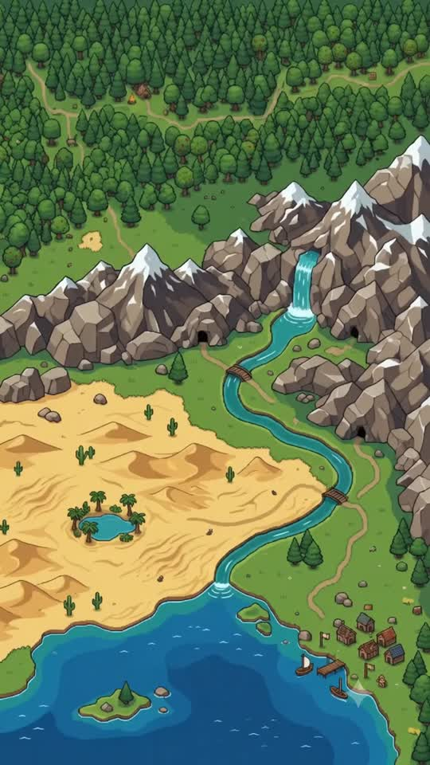
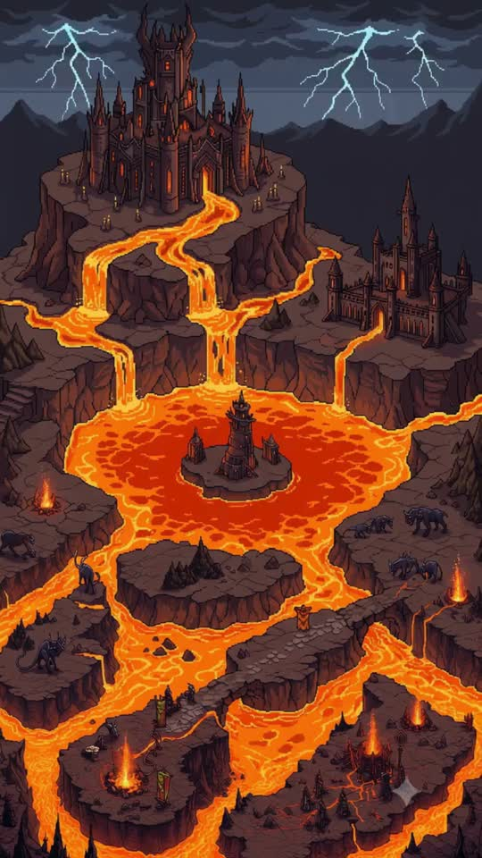
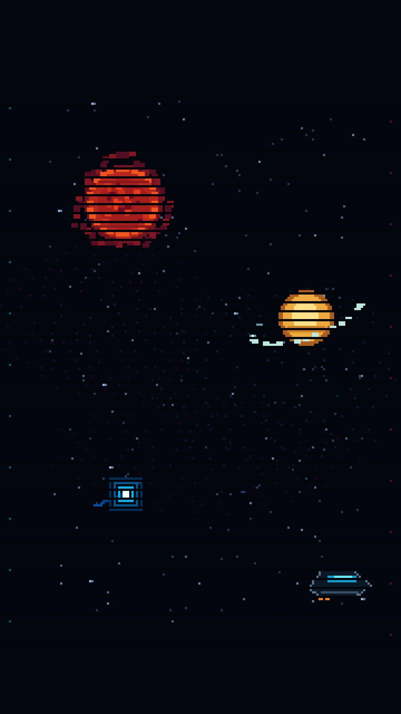
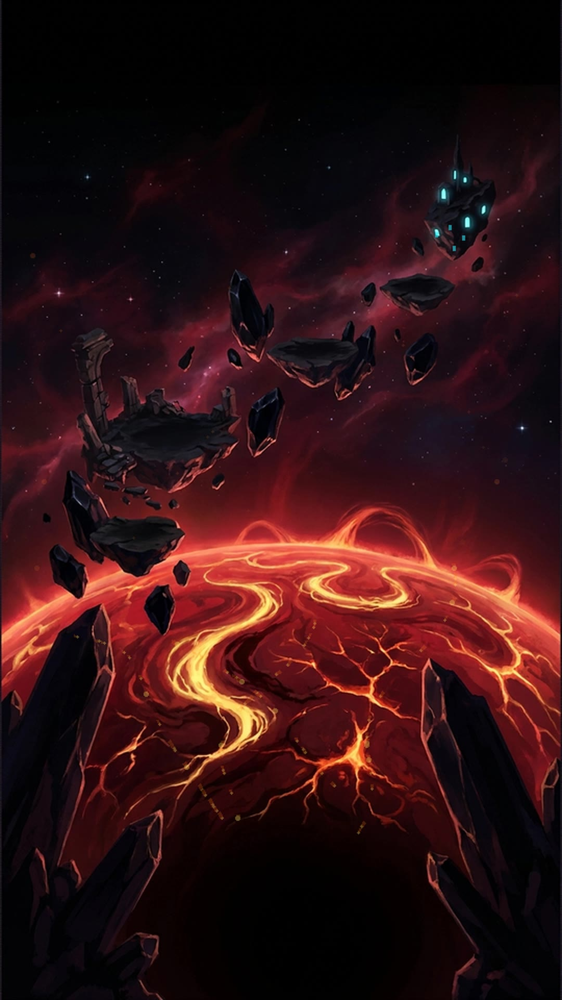
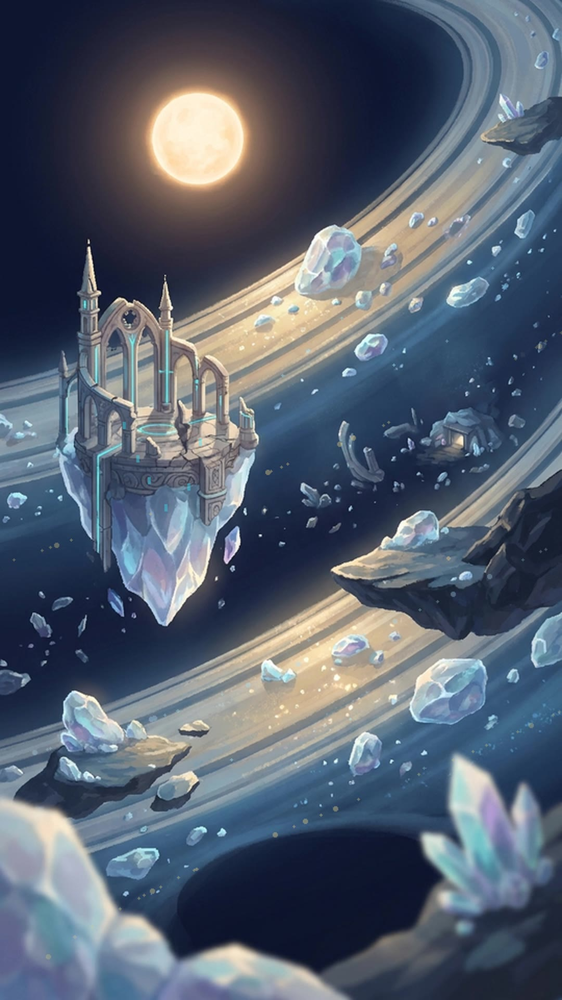
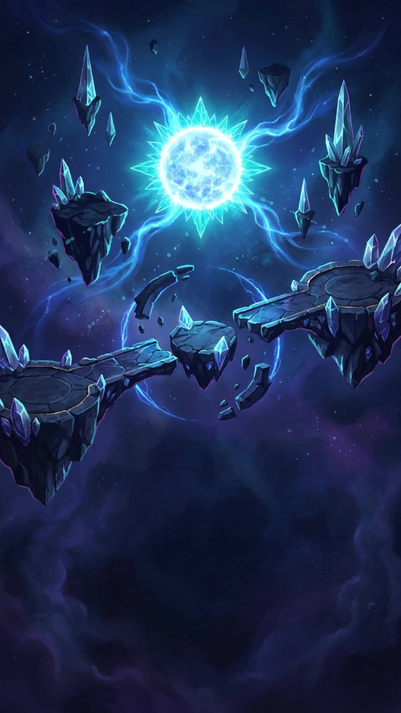
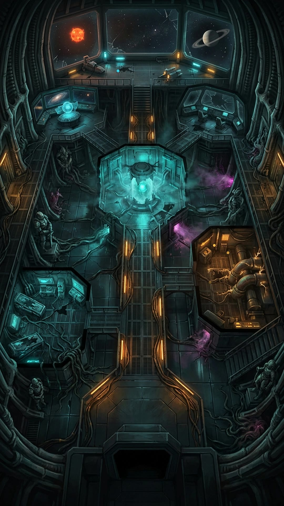
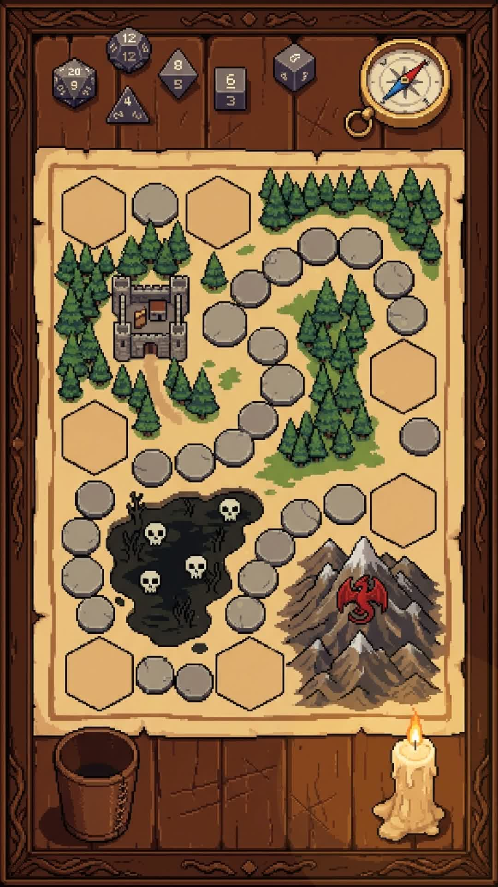

Six maps chained end to end: two ground realms, a Galaxy hub with four sub-maps behind gates, and a Tabletop Realm beyond that. Every map is a looping video background with clickable zone pins; green pins are Safe Zones (free full heal + potion shop), colored pins are battle zones with a level range, a wave count, and a themed monster pool.

The starting realm — forest, mountain, desert and an island out at sea.
| # | Zone | Kind | Level | Waves | Pool | Bitz × | EXP × |
|---|---|---|---|---|---|---|---|
| 1 | The Forest | Battle | 1–3 | 1–2 | GreenWorm, JadeBeetle | 1.0 | 1.0 |
| 2 | The Mountain | Battle | 4–9 | 2 | JadeBeetle, StoneImp | 1.3 | 1.25 |
| 3 | Riverfall Mountain | Battle | 10–16 | 2–3 | Kappa, StoneImp | 1.6 | 1.5 |
| 4 | The Wolf Den | Battle | 17–24 | 2–3 | FangStalker, Kappa | 1.9 | 1.8 |
| 5 | The Desert | Battle | 25–32 | 2–3 | SandWorm, SandTurtle | 2.2 | 2.1 |
| 6 | The Oasis | Battle | 33–41 | 2–3 | OasisOtter, RainbowFrog | 2.6 | 2.4 |
| 7 | The Island | Battle | 42–50 | 3 | FlyingFish, IslandMonkey | 3.0 | 2.8 |
| — | Harbor Village | Safe | — | — | rest + potion shop | — | — |

Lava, demons, and the castle of the Demon Lord himself at the very top.
| # | Zone | Kind | Level | Waves | Pool | Bitz × | EXP × |
|---|---|---|---|---|---|---|---|
| 1 | Outer Ruined Village | Battle | 51–58 | 2–3 | Goblin, MinerGoblin | 3.4 | 3.2 |
| 2 | The Crossroads | Battle | 59–66 | 3 | MinerGoblin, BlackBeast | 3.8 | 3.6 |
| 3 | Demonbeast Den | Battle | 67–74 | 2–3 | BlackBeast, RockGolem | 4.3 | 4.0 |
| 4 | Servant Demon Quarter | Battle | 75–82 | 3 | RedHobgoblin, FireGolem | 4.8 | 4.5 |
| 5 | Vice Manor Castle | Battle | 83–90 | 3 | ManorButler, VampireLady | 5.4 | 5.0 |
| 6 | Demon Lord Castle | Battle | 91–100 | 3–4 | VampireLord, VampireLady, ManorButler | 6.5 | 6.0 |
| — | Crossroads Campfire | Safe | — | — | rest + potion shop | — | — |

Galaxy Gate is a hub with no battles of its own — pick a star or the derelict ship to warp into one of four themed sub-maps, then return through the same gate.

| # | Zone | Kind | Level | Waves | Pool | Bitz × | EXP × |
|---|---|---|---|---|---|---|---|
| 1 | Corona Reach | Battle | 101–105 | 3–4 | Ember Pup, Solar Moth | 7.0 | 6.5 |
| 2 | Sunspot Castle | Battle | 106–110 | 3–4 | Solar Moth, Magma Golem | 7.4 | 6.9 |
| 3 | Prominence Arch | Battle | 111–115 | 3–4 | Magma Golem, Ember Pup | 7.8 | 7.3 |
| 4 | Crimson Coreway | Battle | 116–120 | 4 | Corona Dragon, Magma Golem, Solar Moth | 8.3 | 7.8 |
| — | Corona Station | Safe | — | — | rest + potion shop | — | — |

| # | Zone | Kind | Level | Waves | Pool | Bitz × | EXP × |
|---|---|---|---|---|---|---|---|
| 1 | Ice Band | Battle | 121–125 | 3–4 | Crystal Crab, Comet Bunny | 8.6 | 8.0 |
| 2 | Orbital Ruins | Battle | 126–130 | 3–4 | Comet Bunny, Orbit Ray | 9.0 | 8.4 |
| 3 | Debris Crown | Battle | 131–135 | 4 | Ring Guardian, Orbit Ray, Crystal Crab | 9.5 | 8.9 |
| — | Crystal Outpost | Safe | — | — | rest + potion shop | — | — |

| # | Zone | Kind | Level | Waves | Pool | Bitz × | EXP × |
|---|---|---|---|---|---|---|---|
| 1 | Celestial Bridge | Battle | 136–139 | 3–4 | Azure Slime, Plasma Fox | 9.8 | 9.2 |
| 2 | Corona Storm | Battle | 140–143 | 4 | Plasma Fox, Star Jelly | 10.2 | 9.6 |
| 3 | Azure Nexus | Battle | 144–147 | 4–5 | Frostflare Phoenix, Star Jelly, Azure Slime | 10.7 | 10.0 |
| — | Cryo Relay Station | Safe | — | — | rest + potion shop | — | — |

| # | Zone | Kind | Level | Waves | Pool | Bitz × | EXP × |
|---|---|---|---|---|---|---|---|
| — | Restored Med-Bay | Safe | — | — | rest + potion shop | — | — |
| 1 | Navigation Chamber | Battle | 148–153 | 4 | Cable Rat, Repair Drone | 11.0 | 10.3 |
| 2 | Engine Vault | Battle | 154–159 | 4–5 | Repair Drone, Void Mimic | 11.5 | 10.8 |
| 3 | Commander's Room | Battle | 155–160 | 1 | Repair Drone, Corrupted Captain | 11.8 | 11.1 |
| 4 | Sealed Command Bridge | Battle | 160–165 | 5 | Corrupted Captain, Void Mimic, Cable Rat | 12.2 | 11.5 |

Reached through a gate on the Galaxy hub. A wooden game board where you play the invading monster against a party of hero classes.
| # | Zone | Kind | Level | Waves | Pool | Bitz × | EXP × |
|---|---|---|---|---|---|---|---|
| — | Adventurers' Rest | Safe | — | — | rest + potion shop | — | — |
| 1 | Starting Square | Battle | 166–169 | 3–4 | Warrior, Rogue | 12.5 | 11.8 |
| 2 | Grey Fortress | Battle | 170–173 | 3–4 | Warrior, Paladin, Bard | 12.9 | 12.1 |
| 3 | Candlelit Chapel | Battle | 174–177 | 4 | Priest, Paladin | 13.2 | 12.4 |
| 4 | Skeleton Pit | Battle | 178–181 | 4 | Rogue, Sorcerer | 13.6 | 12.8 |
| 5 | Arcane Tower | Battle | 182–184 | 4–5 | Wizard, Sorcerer | 14.0 | 13.1 |
| 6 | Dragonfoot Ridge | Battle | 185–187 | 4–5 | Sorcerer, Wizard | 14.5 | 13.5 |
| 7 | Dungeon Master's Hall | Battle | 188–190 | 5 | Dungeon Master, Ranger | 15.0 | 14.0 |